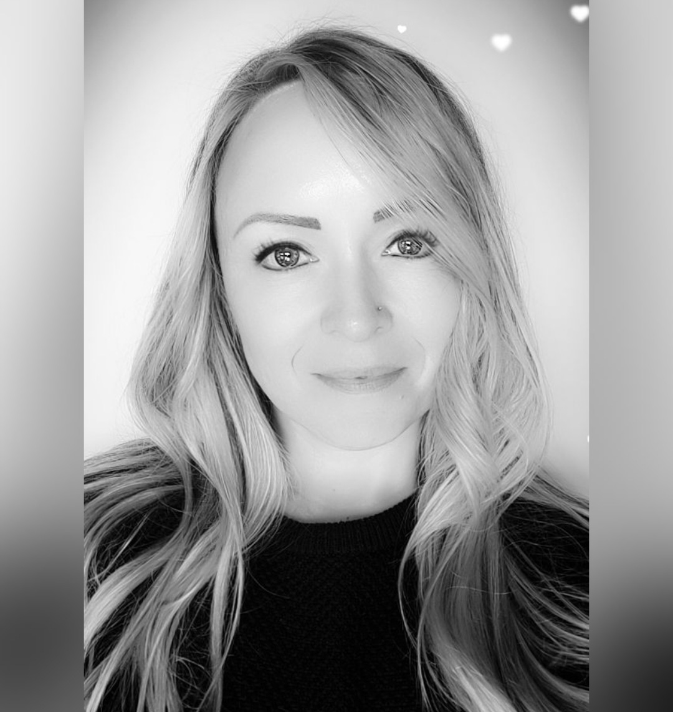

Who is Kelly CW

SUMMARY
A skilled digital design professional with 15 years of demonstrated work experience in design development across multiple platforms for effective brand campaigns and communication. Vastly skilled in web interface design focused on brand alignment and user journey experience. Strong attention to detail, and capable of delivering engaging and targeted designs. Highly adaptable and able to work in corporate cultures with diverse professional teams across global offices. Assertive stakeholder management skills and can engage with specialist technical teams to ensure successful brief delivery.
EDUCATION | WORK EXPERIENCE | SKILLS | OTHER INTERESTS | HOBBIES | CONTACT ME
EDUCATION
Human Factor International
Certificate, Customer Usability Analyst
Activities and societies:
- 1. User Experience Foundations
- 2. User-centered Analysis and conceptual design
- 3. The science and art of effective web and application design
- 4. Practical usability testing
Successful customer-centered design begins with a solid understanding of how people will experience your design. This course provides a foundational understanding of human behavior leading to accurate design decisions.
-
Design Centre - Greenside
BA Multimedia
Activities and societies: had a small experience for the first year for three fields of design : Interior; graphics and multimedia.Activities and societies: had a small experience for the first year for three fields of design : Interior; graphics and multimedia.
Selected as student to be published in D&AD Global Students Awards annual 2006
BACK TO TOP
WORK EXPERIENCE
Current
UX & UI Designer | Web Designer | Brand Custodian
Financial - Full-time
April 2014 - current
CXT TEAM
- UX Designer to dotcom team (SA & UK website optimization) - incorporating UI designs for better UX.
- Assist team, colleagues, working together, problem-solving.
- Overarching brand custodian, work closely with the head of CI brand in marketing teams.
PB MARKETING TEAM
- Overarching brand custodian, work closely with the head of CI brand in marketing teams.
- Part of recent Global CI update, major project affecting every platform and medium in the organisation requiring rebranding and alignment across all legal entities, AEM web pages, HTML communications, and internal collateral. Alignment needed to uniform all work representing Investec for regions around the globe (SA, UK and Mauritius), to look as one bank for all elements: logos, fonts, legal, zebras and colours.
- Assist team, colleagues, working together, problem-solving.
- Html Newsletters: HTML creation (responsiveness is a huge requirement and checking detail is necessary), UX journey mapping, AEM updates and page creation (dotcom).
- UX designer in all elements of work - A/B testing for 2020 using Optimizely via AEM platform.
- SEO implementation | link tracking creation (UTM links).
- Analytics Reporting with user experience included.
- Job filing and ensuring audit compliant.
Previous
- Creative Web & Online Designer
AZURE MEDIA LTD - Full-time
Dec 2011 - March 2014
Role and responsibilities:
- Update website content
- Updating Social Media content
- Create new imagery for newsletters/ promotional html mailers - weekly basis
- Creation of banners advertising for Affiliates for all the brands
- Creation of Promotional websites for Brands associated to the Casinos under the Azura name.
- Creation of Promotional Landing pages.
- Web Designer | Graphic Designer
VERPAKT Online gaming - Full-time
May 2009 - Dec 2011
Role and responsibilities:
- Designed and developed pages for campaigns
- Design digital banners, emailers (HTML), print, posters, (brochures), logos, newsletters (HTML), updating and creating website pages for game launches.
- Re-vamp and design websites with content and imagery
BACK TO TOP
SKILLS
- ✔ Corporate Identity Creation (14 years)
- ✔ Campaign Launch Material (11 years)
- ✔ Front & Back End Design (11 years)
- ✔ Customer Service Excellence (11 years)
- ✔ Web Design (11 years)
- ✔ UI Design (9 years)
- ✔ SEO Optimisation (3 years)
- ✔ Stakeholder Relations (3 years)
- ✔ UX Design (2 years)
- ✔ Brand Activation (2 years)
- ➤Organized, deadline-driven, BRAND PROUD!
- ➤Team player, collaborate for solutions or a second option.
- ➤Work well under tight deadlines - a fast learner.
- ➤Thrive in being creative, ideas are vast - collaboration always encourages more.
- ➤Digitally creative, hands-on while working within a creative environment surrounded by creative people.
BACK TO TOP
OTHER INTERESTS
Other interests include being social, trying to things and doing different forms of creativity. I enjoy drawing as it can be quite a rewarding activity, yet also helps to be at peace.
BACK TO TOP
More on my hobbies | Contact me here